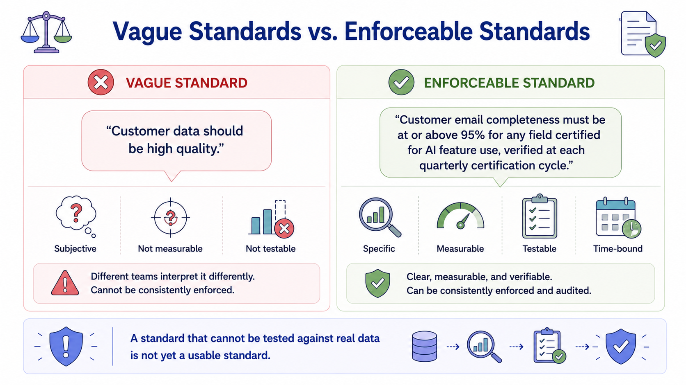
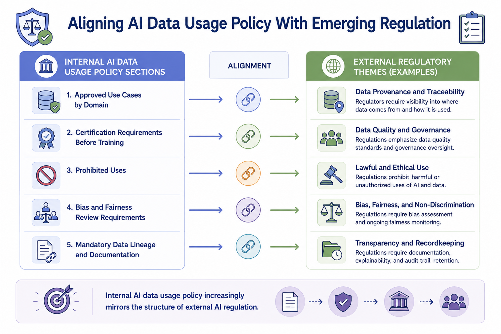
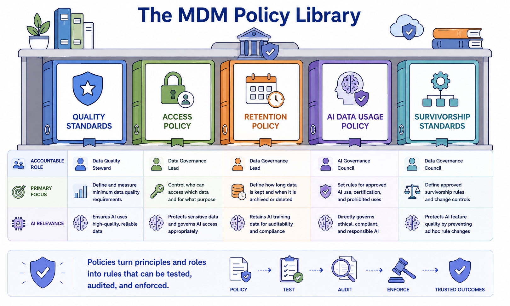

Policies and Standards
Module support notes
Writing Standards That Are Actually Enforceable
A common weakness in early-stage MDM governance is writing standards in aspirational language that cannot actually be tested against real data. An enforceable standard specifies a measurable threshold, the dimension it applies to, the domain or field it covers, and the cadence at which compliance is verified.
Standards that meet this bar can be automated as monitoring rules — closing the loop between policy and operational practice. A standard that cannot be tested against real data is not yet a usable standard. It is an aspiration that will be interpreted differently by every team that reads it.
Tip
Test every standard you write against this question: could a monitoring rule be configured to check compliance with this statement automatically? If yes, the standard is enforceable. If no — if the answer depends on subjective interpretation — rewrite it until it passes. Vague standards do not protect the organization; they create the appearance of governance while leaving all the difficult decisions unresolved.

AI Data Usage Policy and Regulatory Alignment
Organizations writing AI data usage policy today are increasingly structuring it to align with the themes appearing in AI regulation across multiple jurisdictions — provenance documentation, bias and fairness review, explainability requirements, and audit trail retention. Building this alignment into internal policy from the start reduces the work required to demonstrate compliance as external requirements formalize.
It also gives the organization a head start on governance maturity regardless of which specific regulatory framework eventually applies to their AI use cases — because the foundational documentation, review processes, and audit trails will already be in place.
Note
Internal AI data usage policy increasingly mirrors the structure of external AI regulation. The four themes appearing most consistently across jurisdictions are: data provenance, bias and fairness assessment, explainability, and audit trail retention. Structuring internal policy around these themes now means the organization will not need to rebuild its governance documentation when external requirements formalize — it will only need to verify alignment.

Policies turn principles and roles into rules that can be tested, audited, and enforced — connecting governance intent to governance practice across every domain and AI use case.
